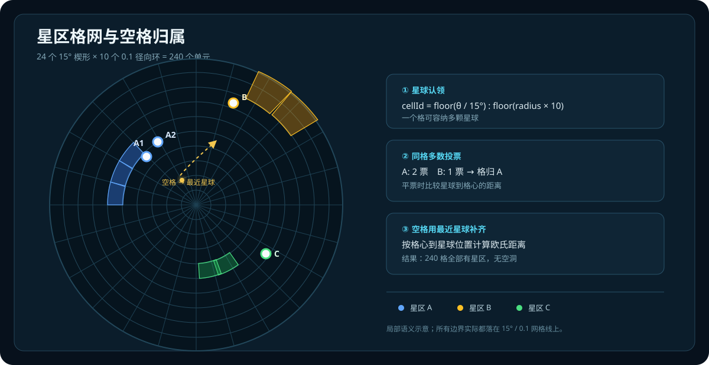
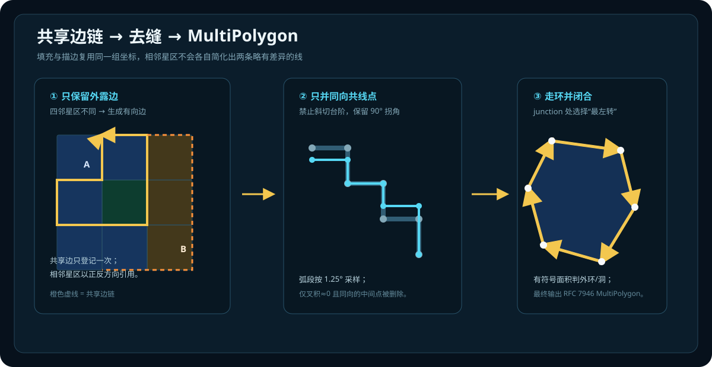

本文详解站内每个功能板块的实现方式、数据来源、计算口径与缓存策略，供二次开发与数据投稿者参考；数值口径以本文为准，两处数字若不一致以页面顶部的「更新于」判断谁更新。
官方游戏 API (api.live.prod.thehelldiversgame.com)
│
├─ GitHub Actions 每 5 分钟（fetch-data.yml）
│ → scripts/fetch_site_data.py 抓取 + 合并翻译 + 落盘
│ → HD2-Galatic_war-Map/data.json（主数据，约 300KB）
│ → HD2-Galatic_war-Map/data/recent/（实测帧，15 分钟粒度）
│
├─ 翻译仓库（HD2Web-Trans，每 15 分钟）
│ → 官方 zh-Hans API 采集新闻/MO/事件正文
│ → 缺官中时 DeepSeek 机翻兜底
│ → 推送 TransNews.json 到本仓 data/translated/
│ → 触发本仓 merge_translations.py 合并进 data.json
│
├─ 星球历史仓库（hd2-planet-history，每 15 分钟）
│ → 记录全部 273 颗星球的 {players, health, owner}
│ → 24h 滚动窗口，GitHub Pages 供星球详情页 fetch
│
└─ API Schema Watch（每天 2 次，UTC 22:00 / 10:00）
→ 比对 8 个信息源的 schema（字段名+类型）
→ 有变更开 Issue 报告 + 更新基线
| 优先级 | 来源 | 说明 |
|---|---|---|
| 1 | data.json | 主数据，CI 每 5 分钟更新 |
| 2 | data/recent/ 实测帧 | 15 分钟粒度差分（解放速率 / MO 速率） |
| 3 | data/translated/ | 翻译仓库产物（TransNews / official_texts / campaign_zh） |
| 4 | tables/ 静态表 | 星图 / 区域 / 补给线 / 词条 / 效果对照表 |
| 5 | hd2-planet-history | 单星球人数 / 血量历史（24h 窗口） |
| 6 | 官方 API 直连 | 最后兜底（口径可能与主站不一致） |
生成：scripts/fetch_site_data.py，GitHub Actions fetch-data.yml 每 5 分钟。
来源：官方 api.live.prod.thehelldiversgame.com（需 X-Super-Client 头），companion 兜底。
| 字段 | 类型 | 说明 |
|---|---|---|
fetchedAt | str ISO | 抓取时刻（页面时间基准） |
planets[] | array | 273 颗星球：index/name/sector/currentOwner/health/maxHealth/players/resistance/activeEffects/regions |
campaigns[] | array | 当前战役：liberation（planet.health→解放度）/ defense（defendersProgress/attackersProgress/attackersRate/remainingTime） |
assignments | dict | 当前 MO：briefing/tasks/progress/deadline/startedAt |
dispatches[] | array | 30 条原始新闻（英文） |
news[] | array | 最新 10 条（带翻译仓库中文译文） |
major_order | dict | MO 简报：brief/translated_brief/translated_at |
dss | dict | DSS：planetIndex/activeEffectIds/tacticalActions（含捐献进度）/electionEnd |
player_distribution | dict | total/humans/terminids/automatons/illuminate |
ownership_history | dict | events/defenseEvents（归属变化检测） |
active_campaign | dict | 战役剧情（title_cn/description_cn/phases 中文） |
strategic | dict | 战略机遇：active/status_cn/dispatch_id |
impactMultiplier | float | 解放速率推演用影响系数 |
fetch_site_data.py 不覆盖 news / major_order / strategic——这三个字段由翻译仓库通过 merge_translations.py 单一写入。data.json → assignments（官方 API v2/Assignment/War/801）major_order.translated_brief（翻译仓库官方 zh-Hans 采集）major_order.tasks（按 setting.tasks[].valueTypes 解析：1=阵营3=数量5=装备 ID）js/forecast.js）rate = current / 全程已历小时 projected = clamp((current + rate × 剩余小时) / goal × 100, 0, 100) etaH = (goal - current) / rate win = etaH ≤ remainingH
setting.tasks[].values[5]（装备 ID） → scripts/order_items_en.json（社区提取的官方英文串） → 站点图鉴 terms.json（官方简中名） → en_fallback（明确标记英文名回退） → unresolved（只保留 raw ID，不猜名）
文件：HD2-Galatic_war-Map/planet.html
┌─────────────────── Command Hero（全宽）───────────────────┐ │ 左：身份 中：168px 解放进度环 右：Quick Intel │ │ （中/英/序号/ （aria-label + 文本值） （在线/占比/ │ │ 星区/归属/状态） 净速率/…）│ ├──────────────┬──────────────────────┬──────────────────────┤ │ 左 4 栏 │ 中 5 栏 │ 右 3 栏 │ │ 战略态势 │ 星球趋势（主图） │ 星球统计 │ │ 补给线 │ 下属区域 │ （13 张 KPI 卡） │ ├──────────────┴──────────────────────┴──────────────────────┤ │ 环境与作战参数（全宽） │ ├──────────────────────────────────────────────────────────────┤ │ 数据口径（折叠 details） │ └──────────────────────────────────────────────────────────────┘
| 公式 | 表达式 | 说明 |
|---|---|---|
| 解放进度 | 1 − health / maxHealth | 己方星球按 100% 显示（官方报满血） |
| 推演速率 | 在线玩家 × impactMultiplier × LIB_RATE_K ÷ 血量 − 抵抗度 | LIB_RATE_K = 90 |
| 等效推进速率 | 净速率 × 血量倍数（基准球=100 万血） | 让「血厚」折回百分比体感 |
| 抵抗度 | regenPerSecond / maxHealth × 100 (%/h) | |
| 每小时回血 | 抵抗度% × maxHealth / 100 (HP/h) | 推演口径绝对值 |
hd2_variables.json（行动变量表，82 个 effect id，中文名+描述+分组） → galactic_effects.json（description_cn 官方中文 + description 英文） → effect_id_cn.json（中文名兜底，191 条） → 效果 #原始ID（照实显示，不猜名）
占位符替换（fillEffectTemplate，共享模块 js/planet-card-effects.js）：
#V_ONE 配备名类（ARSENAL AUGMENTATION）→ 确定性替换为 stratagems_full 站内中文名#V_ONE / #V_TWO / #AMOUNT 数值类 → 查 tables/effect_values.json（galacticWarEffects 309 条）替换实值[动态值] 标注（不猜）保留分组：变种类（终结族变种 / 特殊个体 / 机器人军团 / …）+ 作战限制。其余（深域惧像 / 环境条件 / 设施与场所等）不分组平铺底部。
数据来自 hd2-planet-history 仓库（GitHub Pages）：
文件：HD2-Galatic_war-Map/galaxy-map-v2.html（约 3100 行单文件 SPA）
技术栈：MapLibre GL（本地 js/libs/maplibre/）+ 原生 JS，无框架无构建。
--c-humans/terminids/automaton/illuminate）tables/waypoints.json（186 星球 / 341 条连接）assets/planet-icons/<英文名>.png（273 个，本地）星球卡：js/planet-card-effects.js 共享模块——行动变量图标 + 统一折叠区（城市列表 + 详情），主页与星图共用。
载入遮罩：js/boot-splash.js + css/boot-splash.css（旗帜徽标脉冲 + 分段进度条 + lore 轮换），五页面统一。
游戏没有向公开接口提供可直接使用的星区多边形。当前星图不连接真实星球坐标生成自由多边形，而是把银河盘面切成一套极坐标格网，先判定每个格属于哪个星区，再沿不同星区之间的格边提取并集轮廓。
24 × 10 = 240 格。每条边只能是径向直线或同心弧，所以多格合并后会像几块大小不一、略带弧度的倾斜矩形。
这些边界是社区按星球分布推断出的可视化范围，不是官方行政区划。格网尺度直接决定观感：过粗会出现大台阶，过细又会失去游戏里的“大块领土”轮廓。
| 输入 | 用途 | 是否影响几何 |
|---|---|---|
planets[].position | 归一化银河平面坐标 (x,y)，半径约 0–1 | 是，决定星球所在格和空格补齐 |
secCnByPlanet(planet) | 按 starmap 权威映射取得中文星区名 | 是，格子的归属标签 |
currentOwner | 星区底色、势力统计 | 否，换阵营不改边界形状 |
角度从屏幕上方向开始编号，同时把右手系坐标旋转 90°，使编号方向与站内星图一致。格键写作 w:r：
θ = normalize(atan2(y, x) + 90°) w = floor(θ / 15°) // 0..23 r = floor(hypot(x, y) × 10) // 0..9 id = w + ":" + r
w=23 的下一个角向格回到 w=0，因此所有角向邻接都做 24 取模。半径两端会钳制到合法范围，避免浮点误差产生 r=-1 或 r=10。

cellId，把星球加入该格。完成后得到完整的 cellOwner[w:r]。当前数据里 240 格全部有归属，没有未分配空洞；星区边界只能落在格线上，不会穿过某一格。
若逐格描边，每格的四个边都会重复绘制，半透明填充下会出现发丝缝和叠色。现行实现把整个格网看成一张平面图：
+w、右径向沿 +r、外弧沿 -w、左径向沿 -r。w:r；全部轮廓边先合并成无向边表。这一步同时处理两个容易出错的情况：相邻星区必须得到完全相同的折线，不能各自简化；两个格只接触一个角点时，该角可能“2 进 2 出”，所以程序保存的是有向边列表，而不是每个角点的唯一后继。

早期版本尝试用 Douglas–Peucker 把细密台阶压成直线，边界会更平滑，但会变成任意角度的斜多边形，失去游戏观感。现行算法只删除连续、同向且叉积近似为零的中间点：
1.25° 一段取样，避免长弧退化成一根弦；共享链先统一简化，再供两侧星区共同使用，所以相邻填充之间不会因为两条不同的简化折线而裂开。
5000 防止异常数据卡死；未能闭合的环会被跳过并在控制台告警。Feature，几何为 MultiPolygon，属性包括星区名、星球数、描边色和底色。填充与描边最终复用同一份 GeoJSON，不需要为每格单独建面。这样既消除格间缝，也降低重复面片数量和 GPU 绘制开销。
240 × N 次距离比较，N 为当前星球数。WED/RING、新增星球或修正星区映射后才需要重新生成。它是“像游戏”的推断边界，而不是官方数据解密结果。若按真实世界法律、剧情或游戏后台区划理解，会得到错误结论；本页描述的是当前 galaxy-map-v2.html 实际执行的渲染算法。
tables/planet_regions.json（84 颗有城市/工厂的星球，来自 wiki Lua 模块）tables/planet_regions_zh.json（游戏内文本解包的官方简中）data.json → planets[].regions[]（官方实时数据）区域速率：实测优先（data/recent/planet_regions.json 帧差分），推演兜底（区域玩家 × impactMultiplier × K ÷ 区域血量 − 区域抵抗度）。
js/regions.js）入侵进度 ≥ (1 − availabilityFactor) × 100 或 主星球解放 ≥ 阈值区域满血 × damageMultiplier / 母星球血池 × 100（个百分点）data/recent/（CDN 15 分钟一帧，由采集脚本落盘）index.json（清单）、planet_<idx>.json（单星球血量帧）、assignments.json（MO 进度帧）、planet_regions.json（区域帧）实测净推进 %/h = −(末帧血量 − 首帧血量) ÷ 满血 × 100 ÷ 帧间隔小时 施加 / 纯产出 = 实测净推进 + 抵抗度 等效抵抗度 = regenPerSecond × 3600 ÷ 1,000,000 × 100（100 万血基准）
满血顶格拒绝：窗口首尾帧都 ≥ 满血（容差 0.05%）时不产出实测（Δ=0 不代表净速率为 0，必须交推演兜底）。
易主拒绝：窗口内星球归属发生变化时不产出实测。
数据源：data.json → dss（官方 spaceStations + tacticalActions）
js/dss-donations.js 口径）cost[0].current / cost[0].target × 100（只在筹集期展示）itemMixId → 普通样本 / 稀有样本 / 申购点maxDonation / maxDonationPeriodSec生效效果：activeEffectIds → 对照表（HD2行动变量对照表.md TACTICAL ACTION 段）→ 中文名 + 描述
data/history/player_distribution.json（CI 每 5 分钟追加）hd2-planet-history 仓库 GitHub Pages{players, health, owner} 完全相同则跳过{"planets": {"<idx>": [[epoch_ms, players, health, owner_id], ...]}}数据源：data.json → ownership_history
events[]：归属变化事件（detectedAt / planetIndex / fromOwner / toOwner / previousSeenAt）defenseEvents[]：防守成功事件（detectedAt / planetIndex / attacker）js/ownership-changes.js）previousSeenAt 早于窗口起点 → 标注「范围待确认」tables/hd2_variables.json — 行动变量对照表（82 个 effect id，含中文名/中文描述/分组/效果 ID 数组）tables/galactic_effects.json — 217 条（含 description_cn 官方中文 + description 英文 + name 英文名）tables/effect_id_cn.json — 191 条中文名兜底分组：保留分组：变种类 + 作战限制；其余不分组平铺底部。
占位符替换：见星球指挥台 § 词条权威链。
效果数值表：tables/effect_values.json（309 条，来源 companion live API galacticWarEffects——游戏 GalacticEffectSetting 透传，非文案创作内容）。
数据源：tables/waypoints.json（来自 helldivers2.dev，186 星球 / 341 条连接）
展示：相邻星球列表 + 状态 chip：超级地球控制敌方控制（阵营色）当前有战役
战略提示（仅可推导时显示）：
文件：HD2_Ballistics/（纯前端离线，无第三方依赖）
ballistics.js）a_drag = -K·|v|·v，K = 0.5·ρ·Cd·A/m伤害比例 = 25% + 75%·(v/v_config)²HD2_Ballistics/data/equipment_catalog.json）Darctor/Helldivers2_RawData（按 HEAD SHA 绑定 URL）sync-ballistics-catalog.yml）预算上限：MAX_TOTAL_STEPS=250000（积分步数）、MAX_ANGLE_SAMPLES=3600（扫描采样数），超限直接报错。
独立仓库（私密）：Jerry114514/HD2Web-Trans
主同步频率：每 15 分钟（cron */15）
官方 API zh-Hans（新闻/MO/事件正文） → 官中缺失时 DeepSeek 机翻兜底 → TransNews.json / official_texts.json → repository_dispatch 触发 Push TransNews to Page → merge_push_page.py 合并进主仓 data.json → Pages 重建
合并优先级：人工译文（manual:true）> 官方中文（official_zh）> 机翻（machine_translation）> 英文原文（official_untranslated）
| Workflow | 频率 | 功能 |
|---|---|---|
fetch-data.yml | 每 5 分钟 | 抓取官方 API → data.json + 实测帧 |
sync-ballistics-catalog.yml | 每天 | 武器目录同步（RawData 上游） |
upstream-watch.yml | 每天 | wiki.gg 页面内容变更侦测 |
api-schema-watch.yml | 每天 2 次 | API 信息源结构变更侦测 + Issue 报告 |
validate-data.yml | PR / push | 社区投稿数据校验 |
validate-forecast.yml | PR / push | 物理模型 / 前端回归测试 |
sync-tables.yml | — | 静态表同步 |
fetch-patchnotes.yml | — | 版本公告发现 |
data/api_schema_baseline.json 比对（542 个字段路径）api-schema-watch）+ 自动更新基线[动态值] 标注，不猜值